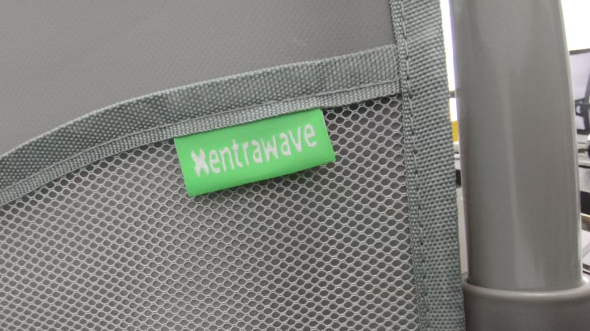

How to choose a patient lift manufacturer: a procurement checklist
Choosing a patient lift supplier is a five-year decision, not a price comparison. A wrong supplier costs more in failures, downtime, and caregiver injuries than any saving on the unit price. This checklist tells you what to verify before you sign the PO.
What's in this guide
- Manufacturer vs trading company — how to tell the difference in 10 minutes
- The 6 things that actually matter when evaluating a patient lift supplier
- A 10-point factory audit checklist (send this to your shortlist)
- Red flags that should end the conversation immediately
- The exact documents to request before ordering
A patient lift is a load-bearing medical device that moves human beings. It is not a commodity you source on price alone. When a lift fails, the cost is not a return shipment — it is a resident on the floor, a caregiver with a back injury, and a facility with a liability claim. That is why the first question is not "how much?" but "who actually builds this, and can they prove it?"
This guide is written from the manufacturer's side of the table. We build patient lifts, and we see the same procurement mistakes repeated by facilities and distributors every week. Here is what we tell buyers to check — including the things we would want a buyer to check about us.
Manufacturer vs trading company: the 10-minute test
In the medical equipment supply chain, "manufacturer" is a word that gets borrowed. A trading company will list itself as a manufacturer because it sounds more trustworthy and it hides the markup. The difference matters: a manufacturer controls welding, finishing, and testing. A trading company controls a phone and an invoice.
Here is the test. A real manufacturer can, without hesitation:
- Send factory video — walk-through footage of the production line, welding station, and test area, taken this week, not a stock photo.
- Give you the factory address — and invite you (or a third-party auditor) to visit. A trading company cannot do this.
- Provide the FDA Establishment Registration number — with the operator/owner name that matches the company, not a borrowed registration from a partner factory.
- Explain the manufacturing process — steel sourcing, welding method, paint finish, and how they test each unit. If they cannot, they do not build it.

The 6 things that actually matter
Ranked by how much they affect your five-year cost and liability — not by how impressive they sound on a spec sheet.
1. FDA registration — the compliance floor, not the ceiling
A patient lift is an FDA Class I device under 21 CFR 880.5500. The supplier must hold an FDA Establishment Registration and a Device Listing. "FDA certified" is not a phrase the FDA uses — what you want is a real registration number you can verify in the FDA database, not a logo pasted on a brochure. If the supplier will not share the number, end the conversation. (For the full breakdown of what FDA clearance covers and what it does not, read our FDA certification guide.)
2. Load testing — not a printed rating
A "150 kg capacity" label is meaningless unless the frame is actually tested to that load — and ideally beyond it. Ask how they test: Do they load the seat with the rated weight? Do they test the welds and the height-adjustment mechanism under load? A manufacturer that load-tests can describe the test. One that cannot is printing a number from a competitor's catalog.
3. The frame and finish — where the five-year life lives
The frame material and the finish determine whether the lift rusts, flexes, or seizes in a bathroom environment after two years. Look for a high-carbon steel frame and a baked-on paint finish — not a thin spray coat. Ask for a close-up photo of the weld joints. Clean, consistent welds are the single fastest visual signal of manufacturing quality.
4. OEM and private-label capability
If you are a distributor or brand building your own line, you need a manufacturer that does OEM properly: logo on the frame, your colors, your carton, your manual. This is not a sticker. It means the factory can integrate your branding into the production run — woven label, laser marking, custom packaging — without disrupting quality. Ask to see an example of a run they have done for another brand.

5. Lead time and capacity — can they deliver, or just promise?
A supplier that cannot state a lead time is guessing. Ask for a committed production time and a confirmed shipping schedule — not "around" or "depending on the order." Also ask about capacity: a manufacturer running near full capacity will deprioritize your reorders. You want a supplier with room to scale your volume.
6. Spare parts and after-sales support
Casters, hydraulic seals, foot pedals, backrest locks — these wear. A good manufacturer keeps spare parts in stock and can ship replacements. Ask whether they stock parts, and how long a replacement part takes to ship. If the answer is "we do not sell parts," you will be replacing whole units instead of a $20 caster.
The 10-point audit checklist (send this to your shortlist)
Copy this list, send it to each supplier on your shortlist, and score them. A legitimate manufacturer answers all ten without a pause.
- FDA Establishment Registration number and Device Listing number (verifiable in the FDA database)
- Factory address and current production-line video
- Load-test method and the actual tested weight (not just the printed rating)
- Frame material and finish spec (e.g., high-carbon steel, baked-on paint)
- Weld-joint close-up photos
- Committed lead time and current production capacity
- Spare parts availability and replacement shipping time
- OEM/private-label samples (logo, color, carton, manual)
- English Instructions for Use (IFU) and labeling
- Sample policy — one evaluation unit before a bulk order
Red flags that should end the conversation
Any one of these is enough to walk away. All of them together should tell you to run.
Do not proceed if the supplier:
- Refuses to share the FDA registration number or factory address
- Cannot send current factory photos or video
- Refuses a sample or demands full payment before sampling
- Quotes a price far below market — cheap usually means thin steel, weak welds, or borrowed certification
- Gives vague delivery dates ("around 45 days," "depending on order")
- Has no spare parts or after-sales channel
The bottom line
Choose a patient lift manufacturer the way you would choose any supplier of safety equipment: verify the registration, see the factory, test a sample, and confirm the support. Price matters — but it is the last variable, not the first. A $30 saving per unit disappears the first time a cheap caster seizes or a weak weld flexes under a 150 kg resident.
We build patient lifts — manual, hydraulic, and electric, all 150 kg, all FDA-listed, all on a high-carbon steel frame with a baked-on finish. If you are evaluating suppliers, put us on the shortlist and send us this checklist. We will answer all ten points, send the factory video, and ship a sample. See the full product specifications, or ask us for the document pack.
Frequently asked questions
How do I verify a patient lift manufacturer's FDA registration?
Ask for the FDA Establishment Registration number and Device Listing number, then check them in the FDA Establishment Registration & Device Listing database. A real manufacturer gives you these numbers without hesitation.
What is the difference between a manufacturer and a trading company?
A manufacturer owns the production line — they fabricate, weld, assemble, and test in their own facility and can send factory video or accept a factory audit. A trading company buys from a factory and resells, adding a markup without adding production control.
Should I ask for a sample before ordering in bulk?
Yes. Always order one evaluation unit and have an experienced caregiver use it for a full shift — bed, toilet, and shower transfers. The feedback from actual use tells you more than any spec sheet.
What weight capacity should I look for in a patient lift?
150 kg is the standard for general use. If you serve bariatric residents, look for a heavier-duty frame with a higher tested rating — and confirm the rating is actually load-tested, not just printed on a label.
What are the red flags when choosing a patient lift supplier?
Refusing to share the FDA registration number, refusing a sample, pricing far below market, vague delivery dates, and no factory photos or video. Any one of these should end the conversation.
Evaluating patient lift suppliers?
Put EMPCARING on your shortlist. Send us the 10-point checklist and we'll answer all of it — FDA registration, factory video, load-test method, and a sample quote. Wholesale and OEM welcome.